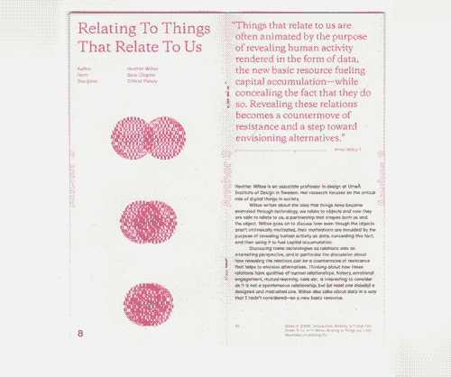

I was pretty happy with the result, creating the publication in pretty much one day after finishing the writing. It was interesting to work with my own writing and the freedom to make the book any form or function and to treat it as an experiment. It made it easy to iterate, to reflect on choices as I made them and make something, that I think is interesting to engage with even though it was made quickly.
I do think working on my typography and ability to communicate information is something that I should continue doing, but publication is perhaps something I should leave to the side unless I am exploring a specific reason for using it (Digital Sobriety?)
I think abstract image making is something I should continue to explore. Even if my end result might be something digital, driven by code, these more textural, bitmap, or even hand made experiments can inform those later ideas.